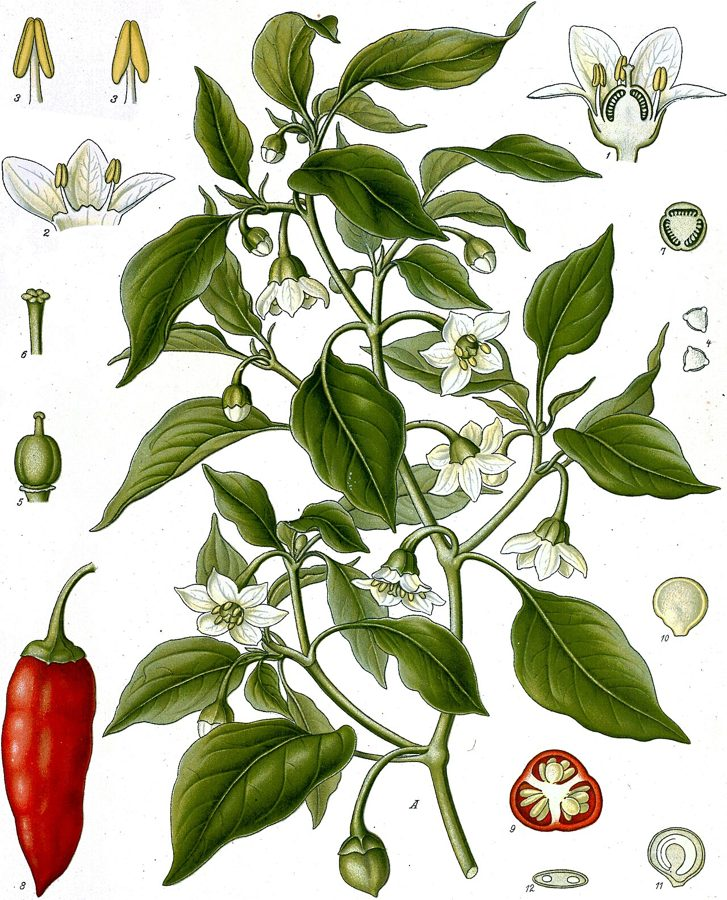

मिर्चChilli
Capsicum annuum · Solanaceae · FLR-0095

- Scientific name
- Capsicum annuum L.
- Family
- Solanaceae
- Hindi
- मिर्च
- Status here
- cultivated
- IUCN
- not evaluated
When to look कब देखें
Present all year.
मिर्च / Chilli
Capsicum annuum L. — Solanaceae
मिर्च (मिरची / हरी मिर्च / लाल मिर्च) — पूर्वी उत्तर प्रदेश के खेतों और घरेलू बाड़ियों में बहुत बड़े पैमाने पर उगाई जाने वाली एक अत्यंत महत्वपूर्ण, छोटी, शाकीय बहुवर्षीय उप-झाड़ी (branching annual or perennial herb) है। यह मूल रूप से मैक्सिको की निवासी है, जिसे 16वीं शताब्दी में पुर्तगालियों द्वारा दक्षिण एशिया (भारत) में लाया गया था। इसकी सबसे बड़ी पहचान इसके सीधे खड़े शाखादार तने, चिकने नुकीले पत्ते, छोटे सफ़ेद लटकते फूल (white flowers), और बेलनाकार, नुकीले फल (हरी मिर्च जो पकने पर चमकीली लाल हो जाती है) हैं। मिर्च के तीखेपन का कारण इसमें पाया जाने वाला 'कैप्सेसिन' (capsaicin) नामक रासायनिक यौगिक है। तीखेपन की तीव्रता को 'स्कोविल स्केल' (Scoville scale) पर मापा जाता है। पूर्वी उत्तर प्रदेश के भोजन में तीखापन लाने के लिए मिर्च एक अनिवार्य सामग्री है, और इसे हरी चटनी, अचार, और सूखे मसाले के रूप में रोजाना इस्तेमाल किया जाता है।
Quick Identification त्वरित पहचान
| Feature | Description |
|---|---|
| Plant habit | Small, erect, branching annual or short-lived perennial herb up to 30–80 cm high |
| Leaves | Simple, alternately arranged, lanceolate or ovate, smooth, dark green, with pointed tips |
| Flowers | Small (8–12 mm), solitary, white or greenish-white, nodding or hanging downwards in leaf joints |
| Fruit | An elongated, cylindrical, hollow berry (2–15 cm long) containing a hot placenta, turning from green to bright red when ripe |
| Seeds | Numerous, flat, small (2–3 mm), kidney-shaped, cream-colored, attached to the central seed core |
Field tip: Look in home vegetable beds. Search for small branching bushes with smooth dark green leaves. Look for tiny drooping white flowers. The long green or bright red chillies hang pointing downwards or stand upright depending on the variety.
Morphology आकारिकी
Biometrics (typical measurements of mature plants in the northern Indian plains):
| Measurement | Range |
|---|---|
| Plant height | 30–80 cm |
| Leaf length | 4.0–10.0 cm |
| Leaf width | 1.5–4.0 cm |
| Flower diameter | 8–12 mm |
| Fruit length | 2.0–15.0 cm |
| Fruit width | 0.5–2.0 cm |
| Seed size | 2–3 mm |
Stem and Branches: Stems are angular, green, heavily branched, woody at the base in older plants.
Foliage: Simple leaves, smooth-edged, tapering at both ends, with long leaf stems.
Flowers: Bisexual, 5-6 lobed. The calyx is cup-shaped, enclosing the base of the fruit securely.
Fruit and Seeds: An inflated, hollow berry with a thin leathery skin, containing capsaicin glands situated along the yellow-white central placenta (seed core) where the seeds are attached.
Cultivation Calendar कृषि कैलेंडर
- Kharif crop: Seedlings are sown in nurseries in June–July, transplanted in July–August. Harvesting is done from October to February.
- Rabi crop: Seedlings are sown in October–November, transplanted in November–December. Harvesting is done from March to June.
- Watering: Requires moderate watering; waterlogging is highly toxic and causes root rot.
Associated Species / Interactions संबंधित प्रजातियाँ
- Family Connection: Shares the Solanaceae family with Brinjal (FLR-0093) and Tomato (FLR-0094), making it susceptible to the same viral leaf diseases.
- Pollinators: Self-fertile, but sweat bees and small honeybees visit the white flowers for pollen.
Pests and Diseases कीट और रोग
- Chilli Thrips: Thrips tabaci are tiny sucking insects that feed on leaf sap, causing the leaves to curl upward (leaf curl disease) and turn dry.
- Anthracnose (Dieback): A fungal disease causing water-soaked spots on ripening fruits, later turning them dry and black.
- Damping-off: Fungal disease attacking young seedlings in overcrowded wet nurseries.
Traditional and Ethnobotanical Use पारंपरिक और नृवंशवनस्पति उपयोग
- Grain Storage Repellent: Dried red chillies are tied in small cotton bundles and placed inside grain storage sacks (kothi / steel drums) of wheat and rice to naturally repel weevils and insects.
- Nazar Utarna (Evil Eye): In UP folklore, a handful of dried red chillies, mustard seeds, and salt is waved around a child's head and thrown into burning embers to remove the 'evil eye' (nazar). The intensity of the coughing fit indicates the strength of the bad gaze.
- Digestive Pickle: Green chillies are slit, filled with mustard powder, fennel, turmeric, and mustard oil to make a spicy pickle (mircha ka achar) consumed in daily winter meals.
- Sore Throat Gargle: A very weak infusion of red chilli powder in warm water is gargled in traditional medicine as a counter-irritant to reduce throat pain.
Expected Locally स्थानीय रूप से अपेक्षित
Not a field record. Written from published accounts for eastern Uttar Pradesh. No confirmed local sighting yet — if you have seen it, that is what the atlas needs.
अभी तक स्थानीय पुष्टि नहीं। यह विवरण प्रकाशित स्रोतों से है, किसी अवलोकन से नहीं।
A highly common backyard vegetable grown in every village home across the Basti district, regularly observed in the Harraiya, Vikramjot, and Basti blocks. Villagers state that they always keep a few chilli plants in their bari to ensure a daily supply of fresh green chillies. In summer, the rooftops of village houses are covered with drying red chillies spread on sheets.
Distribution वितरण
Global range: Native to Mexico and Central America; introduced globally in the 16th century and now cultivated universally in all warm countries.
In India: Cultivated throughout all states; India is the world's largest producer and exporter of dried chillies.
In Uttar Pradesh: Abundant state-wide, both as a commercial crop and home garden plant.
In Basti district / eastern UP: Widespread across all farming blocks.
Research Questions शोध प्रश्न
Anyone can investigate these | कोई भी इन प्रश्नों की जाँच कर सकता है
- How many Scoville Heat Units (relative hotness) does the local "Gola Mirch" variety have compared to the long hybrid chilli in Basti? — Conduct comparative taste panels or extract capsaicin.
- Does the leaf curl disease increase in chilli plants grown next to tomato plots compared to isolated plots? — Monitor leaf curl counts.
- How many days do dry red chillies keep wheat free of grain weevils in a storage jar? — Conduct insect storage trials.
- What is the seed germination rate of Chilli when collected from fresh red fruits versus completely dry wrinkled fruits? — Run seed trials.
- Does spraying a garlic-chilli water extract reduce the count of thrips on young chilli plants in Basti? / क्या लहसुन-मिर्च के पानी के अर्क का छिड़काव करने से बस्ती में मिर्च के छोटे पौधों पर थ्रिप्स (Thrips) की संख्या कम हो जाती है? — Compare pest counts on treated and untreated plots.
Similar Species मिलती-जुलती प्रजातियाँ
| Species | How to tell apart | comparison |
|---|---|---|
| Tomato (Solanum lycopersicum) | Spreading hairy vine; leaves are deeply divided; flowers are yellow; fruit is red and juicy | टमाटर — पीले फूल, रोएँदार पत्तियाँ, रसीले फल |
| Black Nightshade (Solanum nigrum) | Wild herb; leaves are thinner; flowers are white stars; fruit is a tiny black berry (no heat) | मकोय — छोटे सफेद फूल, छोटे गोल विष-रहित काले फल |
| Kalmegh (Andrographis paniculata) | Square stem; leaves are lanceolate but extremely bitter (not hot); flowers are pink-spotted | कालमेघ — चौकोर तने, कड़वे पत्ते, सफेद-बैंगनी फूल |
Field rule: Small branching bush with smooth lanceolate leaves, small white drooping flowers, and elongated hollow green-red berries with a hot spicy placenta, is the Chilli.
Taxonomy & Classification वर्गीकरण
Original description. Carl Linnaeus described the Chilli as Capsicum annuum in 1753 in his Species Plantarum (Vol. 1, p. 188). The type locality was listed as South America. The genus name Capsicum is derived from the Greek kapto, meaning to gulp or bite, referencing the heat. The specific name annuum is Latin for annual, though the plant can grow as a perennial in warm climates.
Subspecies. Monotypic — no subspecies are currently recognised in the main index.
Family and order placement. Placed in the order Solanales, family Solanaceae (potato or nightshade family), subfamily Solanoideae, tribe Capsiceae.
Phylogenetic notes. Capsicum annuum belongs to the South American lineage of the family Solanaceae, showing close genetic ties to wild bird-dispersed species (chilepins) which evolved capsaicin pathways to deter mammals while allowing birds (which lack capsaicin receptors) to disperse the seeds.
IUCN status rationale. Not evaluated (NE) by the IUCN Red List. It has a massive, secure global agricultural population.
Photo Gallery फोटो गैलरी
References संदर्भ
- Linnaeus, C. (1753). Species Plantarum. Laurentii Salvii, Holmiae, Vol. 1, p. 188. [original description]
- Brandis, D. (1906). Indian Trees. Archibald Constable & Co., London.
- Kirtikar, K. R. & Basu, B. D. (1935). Indian Medicinal Plants. Vol. III. Lalit Mohan Basu, Allahabad.
- Perry, L., Dickau, R., Zarrillo, S., Holst, I., Pearsall, D. M., Piperno, D. R., Berman, M. J., Cooke, R. G., Rademaker, K., Ranere, A. J. & Sandweiss, D. H. (2007). Starch Fossils and the Domestication and Dispersal of Chili Peppers (Capsicum spp. L.) in the Americas. Science.
- World Flora Online (2024). Capsicum annuum details.
- GBIF Occurrence Data — Capsicum annuum, India (2010–2025).
Source file: species/flora/crops/chilli.md